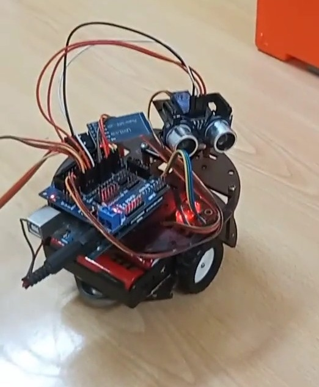

What this project covers
What the car actually does
This is a small two-wheeled chassis with a caster wheel at the back, an HC-SR04 ultrasonic sensor bolted to the front facing forward, and a four-pin DC motor driver controlling both wheels together (no independent left/right speed control — it's a simple forward/back/turn setup, not differential steering with PWM).
It has two modes, both driven by serial commands arriving over a Bluetooth module (an HC-05/06-style board wired to pins 10 and 11 with SoftwareSerial, controlled from a phone app that sends single ASCII characters):
- Manual mode — commands
1–4drive it forward, left, right and back for a fixed 200 ms burst each time the command is received. - Autonomous mode — command
5puts it into a loop that pings the ultrasonic sensor roughly every 100 ms, drives forward while the reading is above 30 cm, and runs a stop-and-reverse routine when something gets closer than that.
There is no left/right decision-making built in — one sensor facing forward can tell you that something is close, not which side is clearer. When it detects an obstacle it always backs up and turns the same direction (right). That's a real limitation of a single-sensor build, not something we're hiding: a student's next iteration on this project is usually adding a second sensor or a servo-mounted sweep, both of which we're leaving as an open exercise here rather than a build we've tested.
Parts used in this build
| Part | Role |
|---|---|
| Arduino Uno-compatible board | Main controller, runs the sketch below |
| HC-SR04 ultrasonic sensor | Front-facing distance sensing |
| 4-pin DC motor driver shield | Drives the two wheel motors from IN1–IN4 |
| HC-05 / HC-06 Bluetooth module | Serial link to a phone app for manual commands and mode switching |
| SG90-class micro servo | Mounted on pin 13; used in the stop routine, not for sensor panning (see below) |
| 2WD chassis + caster wheel | Mechanical base, two motors, single rear caster |
| Battery pack | Powers the motors and board (voltage not separately regulated in this build — see FAQ) |
Wiring: pins as connected
These are the exact pin assignments from the sketch that runs on the car, not a generic reference wiring diagram:
| Arduino pin | Connected to |
|---|---|
| 8 | HC-SR04 Echo |
| 9 | HC-SR04 Trigger |
| 2, 3 | Motor driver IN1, IN2 (left wheel pair) |
| 4, 5 | Motor driver IN3, IN4 (right wheel pair) |
| 10, 11 | SoftwareSerial RX/TX to the HC-05/06 Bluetooth module |
| 13 | Servo signal (stop-routine motion, see below) |
One detail worth flagging for anyone replicating this: pin 8 is used both for the HC-SR04 Echo pin and, separately in the code, as a generic output flag (digitalWrite(pin, HIGH) in the forward command, where pin is also set to 8). In this build that didn't cause a visible problem because the two uses don't overlap in time, but it's not something we'd recommend copying — it's a wiring shortcut from a working prototype, not a clean reference design. If you're building this yourself, give the "status flag" its own pin.
The actual sketch
This is the real code running on the car — trimmed of nothing. Comments in Spanish are original; we've left them as-is rather than translating, since translating code comments after the fact is a good way to introduce a typo that never gets tested.
#include <SoftwareSerial.h>
#include <Servo.h>
SoftwareSerial mySerial(10, 11); // TX | RX
char command;
const int Trigger = 9; //Pin digital 2 para el Trigger del sensor
const int Echo = 8; //Pin digital 3 para el echo del sensor
int pin=8;
Servo servo1;
int IN1 = 2;
int IN2 = 3;
int IN3 = 4;
int IN4 = 5;
int dist=0;
void setup() {
servo1.attach(13);
pinMode(13, OUTPUT);
pinMode(IN1, OUTPUT);
pinMode(IN2, OUTPUT);
pinMode(IN3, OUTPUT);
pinMode(IN4, OUTPUT);
pinMode(pin, OUTPUT);
mySerial.begin(9600);
Serial.begin(9600);
pinMode(Trigger, OUTPUT);
pinMode(Echo, INPUT);
digitalWrite(Trigger, LOW);
}
void loop() {
if (mySerial.available()) {
command = (mySerial.read());
if (command=='5') {
while (command=='5') {
long t, d;
digitalWrite(Trigger, HIGH);
delayMicroseconds(10);
digitalWrite(Trigger, LOW);
t = pulseIn(Echo, HIGH);
d = t/59;
Serial.print("Distancia: ");
Serial.print(d);
Serial.print("cm");
Serial.println();
delay(100);
if (d > 30) avanzarAUT();
else detener();
if (command=='6') detener();
else loop();
}
}
else if (command=='1') { digitalWrite(pin, HIGH); avanzar(); }
else if (command=='2') { digitalWrite(pin, LOW); girarIzquierda(); }
else if (command=='3') { girarDerecha(); }
else if (command=='4') { atras(); }
}
}
void avanzar() {
servo1.write(75);
digitalWrite(IN3, HIGH); digitalWrite(IN4, LOW);
digitalWrite(IN1, LOW); digitalWrite(IN2, HIGH);
delay(200);
digitalWrite(IN2, LOW); digitalWrite(IN3, LOW);
}
void detener() {
digitalWrite(IN2, LOW); digitalWrite(IN3, LOW);
delay(1000);
servo1.write(160); delay(1000);
servo1.write(0); delay(1000);
servo1.write(80); delay(1000);
atras();
girarDerecha();
}
void atras() {
digitalWrite(IN3, LOW); digitalWrite(IN4, HIGH);
digitalWrite(IN1, HIGH); digitalWrite(IN2, LOW);
delay(200);
digitalWrite(IN4, LOW); digitalWrite(IN1, LOW);
}
void girarDerecha() {
digitalWrite(IN3, LOW); digitalWrite(IN4, LOW);
digitalWrite(IN1, HIGH); digitalWrite(IN2, LOW);
delay(200);
digitalWrite(IN4, LOW); digitalWrite(IN1, LOW);
}
void girarIzquierda() {
digitalWrite(IN3, LOW); digitalWrite(IN4, HIGH);
digitalWrite(IN1, LOW); digitalWrite(IN2, LOW);
delay(200);
digitalWrite(IN4, LOW); digitalWrite(IN1, LOW);
}
void avanzarAUT() {
digitalWrite(IN2, LOW); digitalWrite(IN3, LOW);
delay(200);
digitalWrite(IN3, HIGH); digitalWrite(IN4, LOW);
digitalWrite(IN1, LOW); digitalWrite(IN2, HIGH);
delay(200);
}
How the avoidance logic behaves — and its limits
The distance threshold is fixed at 30 cm (if (d > 30) avanzarAUT(); else detener();), read via pulseIn() on the Echo pin and converted to centimeters with the standard t/59 scaling for the HC-SR04. That threshold was picked for the size of the room we tested it in, not calculated from the car's stopping distance — if you build this and the room is tighter or the car is faster, you'll want to raise it.
The servo on pin 13 is easy to mistake for a sensor-panning mechanism (that's the usual reason to put a servo on an obstacle-avoidance car), but in this sketch it isn't one. It only moves inside detener(), running a fixed sequence — 160°, then 0°, then back to 80° — each time the car stops. The HC-SR04 itself is fixed and always faces forward. In practice the servo motion reads as a "head shake" when the car stops, which is a nice touch, but it plays no role in choosing which way to turn.
Two real bugs we found
These aren't hypothetical — they're in the code above, and worth knowing if you build from it:
1. loop() is called recursively from inside the autonomous mode
Inside the while (command=='5') block, the code checks if (command=='6') detener(); else loop(); — but command is never re-read from Bluetooth inside that inner loop, so this branch always falls to else and calls loop() again from inside itself. On an Arduino Uno each nested call adds another stack frame; over a long autonomous run this is the kind of pattern that can eventually exhaust SRAM and cause an unpredictable reset. In the runs we did, sessions were short enough that we didn't see it lock up, but we wouldn't leave it running unattended for an extended stress test without fixing this — replacing the recursive call with a proper loop structure (or just removing the redundant check, since the outer while already handles re-entry) is the correct fix.
2. The Echo pin doubles as a manual-mode status flag
As mentioned above, pin 8 is reused as a generic digital flag in manual mode (digitalWrite(pin, HIGH) on the forward command) while also being the HC-SR04 Echo input everywhere else. It worked in our testing because manual and autonomous modes aren't active at the same instant, but it's fragile wiring, not something to copy into a new design.
What we actually measured vs. what we didn't. We can confirm the 30 cm threshold and pin assignments directly from the running code above — that part isn't a guess. We have not run a formal repeatability test (multiple obstacle materials, multiple approach angles, battery voltage over time), so we're not going to publish precision numbers we didn't measure. If you replicate this build and log real numbers, we'd genuinely like to hear what you found — email through the contact page.
Frequently asked questions
Why does the car always turn the same direction when it stops?
Because it only has one forward-facing sensor. There's no information about which side is more open, so detener() always backs up and turns right. Adding a second ultrasonic sensor, or mounting the existing one on a servo to sweep left/right before deciding, is the natural next step — we haven't built or tested that version yet.
Why isn't the servo used to aim the ultrasonic sensor?
In this build, it just isn't wired that way — the servo only runs a fixed motion sequence inside the stop routine. It's a common next upgrade for this kind of project, but as published here the sensor is fixed and forward-facing.
Is the 30 cm stopping distance reliable at higher speeds?
We tested it at the motor speed set in this sketch (fixed-duration bursts, no PWM speed control). If you increase motor speed or switch to continuous driving instead of the 200 ms bursts used here, the car will need more reaction distance and the threshold should be raised — we did not test faster configurations.
Can I control it with any Bluetooth terminal app?
Any app that can send single ASCII characters over a paired HC-05/HC-06 serial connection at 9600 baud will work — the sketch only checks for the characters '1' through '6'.
This article documents a project the author built and photographed himself. It contains no sponsored placements or paid product endorsements.
Continue learning
For a look at how this site labels specification-based content versus hands-on builds like this one, see our editorial standards page.